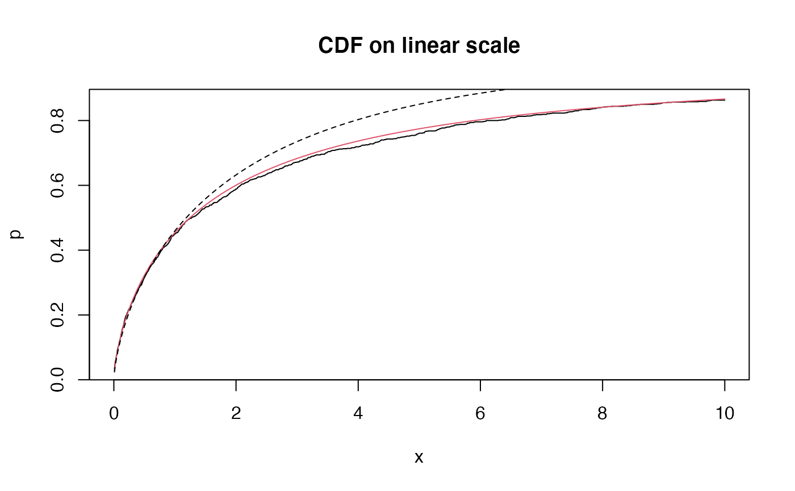
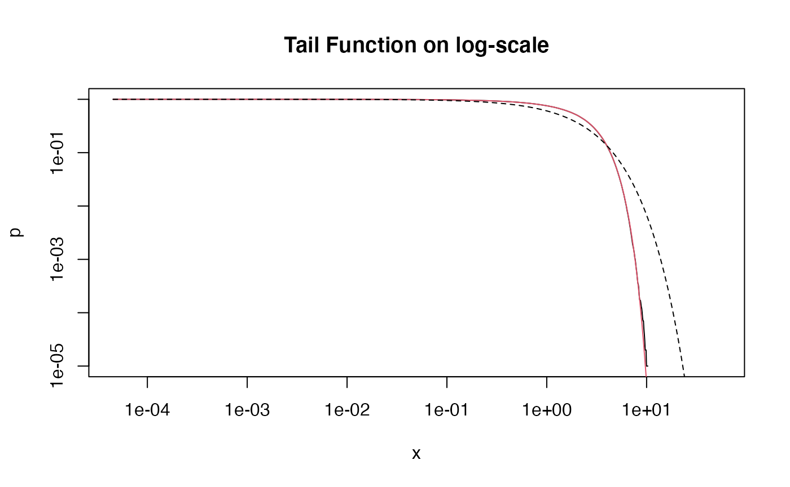

Plots of the Mittag-Leffler distributions
Gurtek Gill, Peter Straka
2018-05-10
MLdist.RmdSet parameters:
First type of Mittag-Leffler distribution
Generate 1000 i.i.d. random variables, and plot their empirical CDF (black) against the population CDF (red). The curved dashed line represents the stretched exponential function, due to the asymptotic result
\[f(x; \alpha, \tau) \sim \exp(-(x/\tau)^\alpha), \quad x \downarrow 0.\]
The straight dashed line in the second plot represents the function \(x^{-\alpha}\), showing asymptotic equivalence to a power-law for large values.
r <- rml(n = n, tail = tail, scale=scale)
edfun <- ecdf(r)
x <- seq(0.01,10,0.01)
plot(x,edfun(x), xlim=c(0,10), type='l', main = "CDF on linear scale",
ylab="p", xlab="x")
y <- pml(q = x, tail = tail, scale=scale)
lines(x,y,col=2)
z <- 1-exp(-(x/scale)^tail)
lines(x,z, lty=2)
x <- exp(seq(-10,10,0.01))
y <- 1-edfun(x)
plot(x,y, type='l', log='xy', main = "Tail Function on log-scale",
xlab = "x", ylab = "p")
y <- pml(q = x, tail = tail, scale=scale, lower.tail = FALSE)
lines(x,y, col=2)
# power law for large values
z <- x^(-tail)
lines(x,z, lty=2)
# stretched exponential for small values
w <- exp(-(x/scale)^tail)
lines(x,w, lty=2)
A plot of the density:
Second type of Mittag-Leffler distribution
The second type of Mittag-Leffler distribution is light-tailed, and in fact has finite moments of all orders: it drops off faster than the exponential distribution (dashed line).
library(MittagLeffleR)
n <- 10^5
tail <- 0.6
r <- rml(n = n, tail = tail, scale=scale, second.type = TRUE)
edfun <- ecdf(r)
plot(edfun, xlim=c(0,cutoff))
x <- seq(0.01,cutoff,0.01)
y <- pml(q = x, tail = tail, scale=scale, second.type = TRUE)
lines(x,y, col=2)
x <- exp(seq(-10,4,0.01))
y <- 1-edfun(x)
plot(x,y, type='l', log='xy', main = "Tail Function on log-scale",
xlab = "x", ylab = "p")
y <- pml(q = x, tail = tail, scale=scale, lower.tail = FALSE, second.type = TRUE)
lines(x,y, col=2)
# exponential distribution
w <- exp(-(x/scale))
lines(x,w, lty=2)
A plot of the density:
hist(r, freq = FALSE, breaks = 20)
x <- seq(0.01,cutoff,0.01)
y <- dml(x = x, tail = tail, scale=scale, second.type = TRUE)
lines(x,y, col=2)